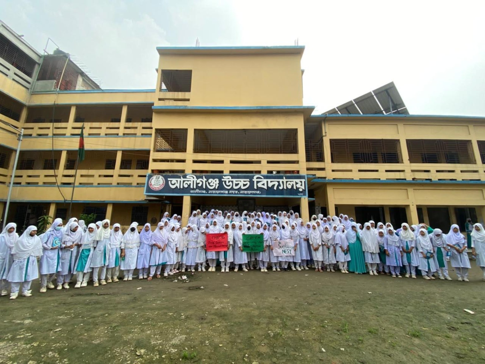
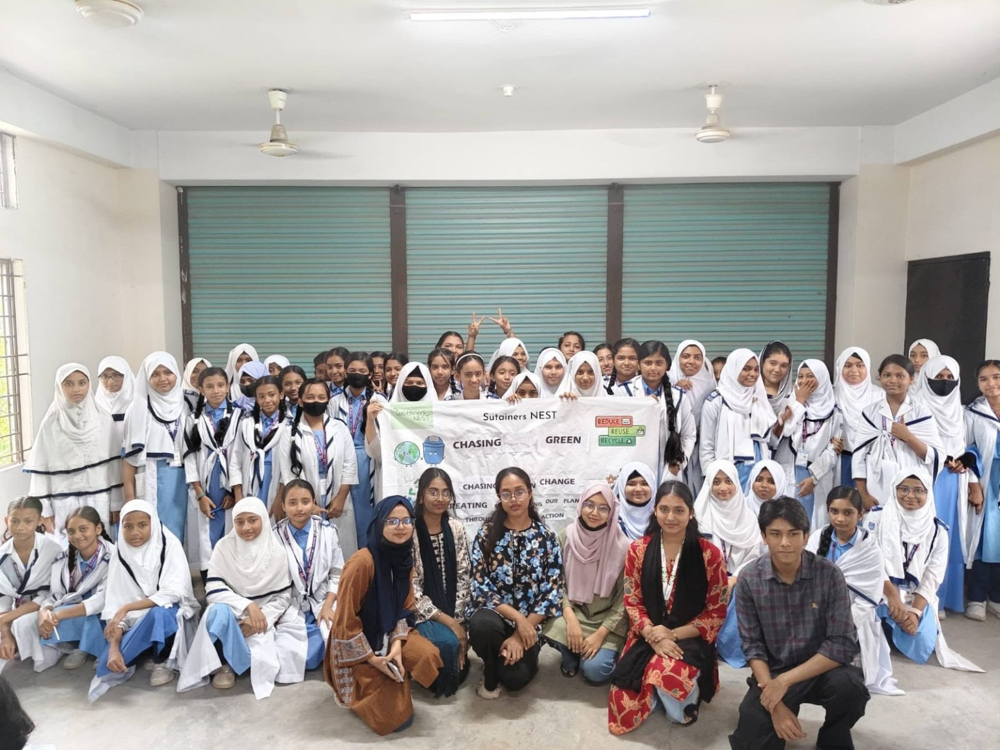
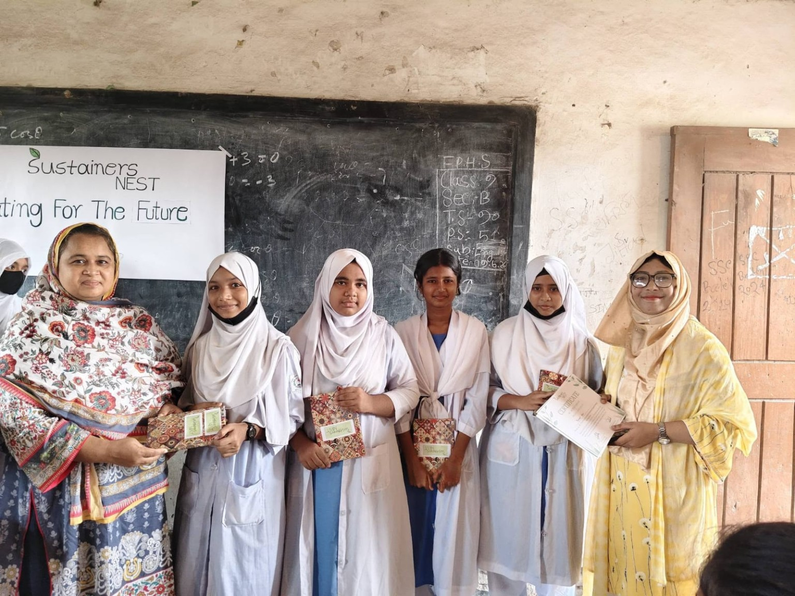
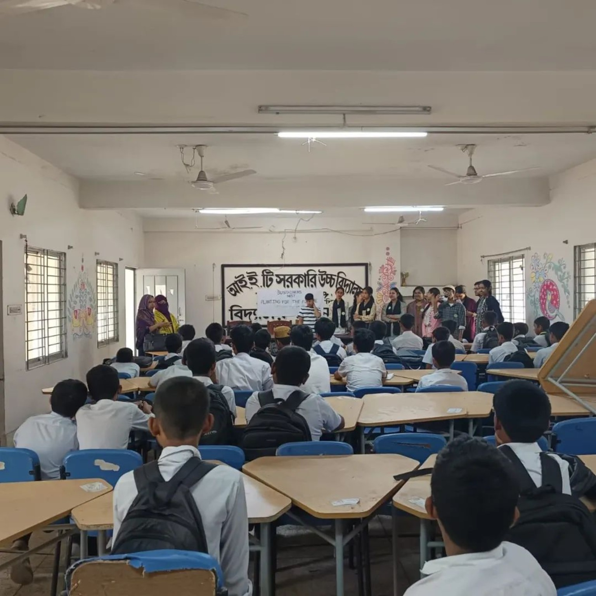
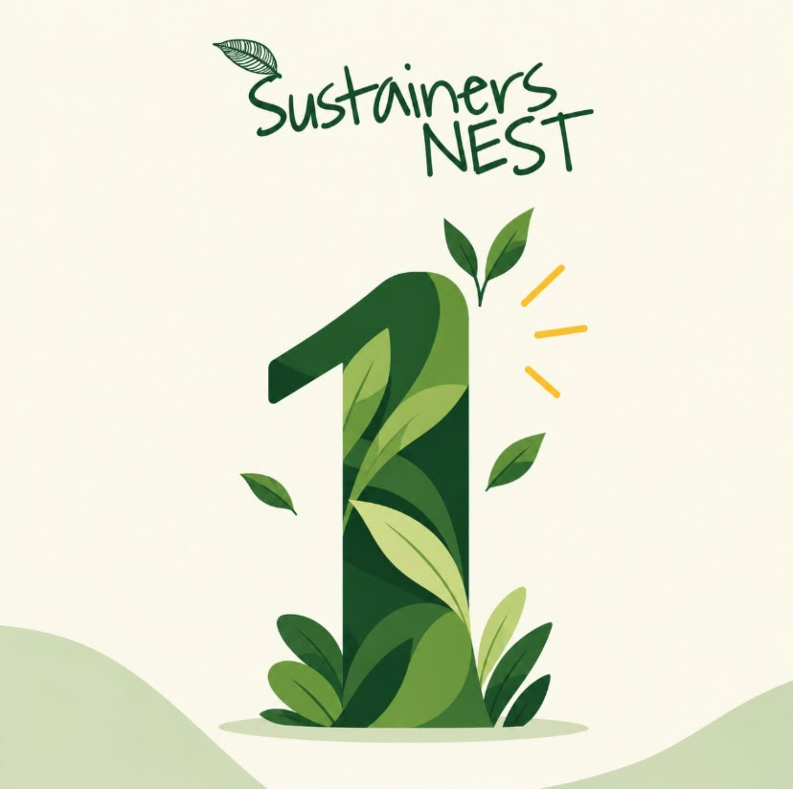

CompletedChasing Green
Aliganj High School
28 September 2026
Young advocates explored climate solutions through group discussion, collaborative action and environmental advocacy.
View activity →A home for milestones, campaign updates, events, institute activities and stories from volunteers.
Project activities and organization-wide advocacy are collected together here as one public activity record.

Completed28 September 2026
Young advocates explored climate solutions through group discussion, collaborative action and environmental advocacy.
View activity → Completed
Completed
20 & 22 September 2026
A two-part institute activity where young innovators combined responsible waste-management learning with hands-on creative upcycling.
View activity → Completed
Completed
16 September 2026
Young advocates connected environmental observation with drawing and creative expression.
View activity →
Completed17 August 2026
Young advocates moved from climate awareness to practical solutions and creative visual advocacy.
View activity → Completed
Completed
27 & 29 July 2026
A two-part activity where young innovators connected waste awareness, reuse and practical creative upcycling.
View activity → Commitment
Commitment
1 July 2026
Sustainers NEST joined a youth-led national commitment to reduce single-use plastics and promote zero-waste practices.
View activity →
Completed21 May & 11 June 2026
Young environmental stewards completed climate education, a 21-day plant-care cycle, reporting, evaluation and recognition.
View activity → Completed
Completed
9 April, 2026
Young advocates explored environmental issues and expressed their observations through visual storytelling.
View activity →
Completed26 January & 17 February 2026
Young environmental stewards moved from climate learning into hands-on planting, stewardship and follow-up.
View activity → Completed
Completed
20 October 2025
Climate learning, local observation and creative expression came together in an institute-based art activity for young advocates.
View activity →
Sustainers NEST’s first anniversary marks an important milestone in the organization’s growing journey.
Each illustration now represents the content it introduces: a growing project, a dated event, an institute activity, or people volunteering together.
Upcoming activities, registrations and post-event recaps.
Documented activities and impact from participating institutes.
Youth leadership, learning and personal contribution.
Organization-wide climate commitments, partnerships and public advocacy beyond individual projects.